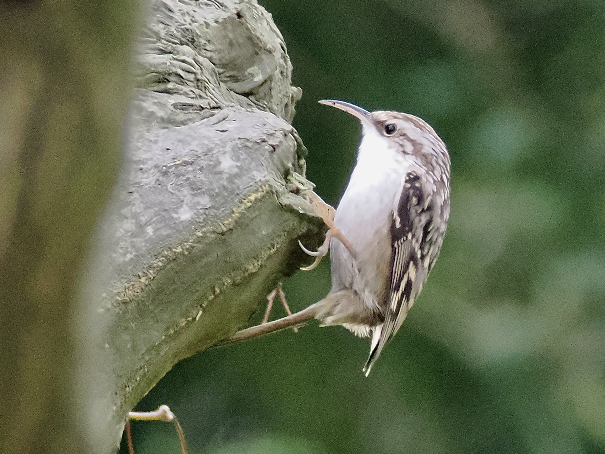

Short-Toed Treecreeper
Certhia brachydactyla
Order: Passeriformes
Family: Certhiidae

A small brown bird with a pale belly and long curved bill. Climbs up tree trunks in a spiral manner, but never down. Awfully similar to Eurasian Treecreeper; differs in range. In the UK only Eurasian occurs, but both could be found in many places in continental Europe. Short-Toed has a longer bill and browner supercilium and underparts, which I still struggle a bit to see. Perhaps best identified by voice.